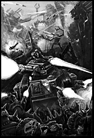

| ||
|
On Armageddon, the final weeks before the Ork fleet's arrival were occupied with frenzied preparations. Titan Legions fired up their ancient plasma reactors and took up defensive positions around the hives, their scanner-eyes scouring the skies. Imperial Guard regiments were mustered and dug in, Space Marines from over twenty Chapters dispersed into the wastelands and mountains to prepare to face the aliens. Imperial merchant vessels daily ran the tightening gauntlet of Ork ships to rush more reinforcements to the planet. The last transport to touch down carried a legend. Commissar Yarrick, the 'Old Man' himself, set foot on Armageddon for the first time in twenty years to the rapturous cheers of the populace.
The old commissar met with the military council that very night and advised them on Ghazghkull's most recent tactics and strategies, adding a dire warning against underestimating the Warlord's capabilities. Many said he had become old and weary, bowed down with the horrific prospect of the coming invasion. Those who knew him well could see the fierce determination that still burned in his single eye. General Kurov had always been renowned for his judgement of men in battle, and he was deeply impressed by Yarrick's drive and intelligence. He requested that Yarrick take over leadership of the military council for the duration of the current crisis and, to the relief of all, Yarrick agreed. Six weeks after entering the Armageddon system, the vast armada of Ghazghkull's forces went into battle with the space stations and weapons platforms in high orbit over the planet. Those who had hoped that the powerful orbital defences of Armageddon would keep the Orks at bay were soon shown to be hopelessly deluded. The orbital battle raged for three days and two fiery nights, but, by dawn of the third day, the skies were filled with the vapour trails of Ork landing pods and the incandescent meteors of attack ships carving through the skies. Hades Hive, still a virtual ruin after the last war, was the first to die. In an act of terrible vengeance Ghazghkull chose not to fight again at Hades. Instead, the entire hive and its inhabitants were smashed asunder by giant asteroids dropped from orbiting space hulks. This act of wanton annihilation was but the prelude to the bloodshed which was to follow.  As the fires of Hades' destruction lit the eastern horizon, the first Ork drop legions clashed with Imperial forces near Volcanus, Acheron and Death Mire. Ground based defence lasers and missile silos took a terrible toll of the Orks as they landed, but the survivors regrouped and assailed the defences with such terrible ferocity that soon more and more of the horde was reaching the planet's surface unscathed. Feral Orks swept down from the Pallidus Mountains and out of the equatorial jungles to join the growing hordes. Where the defences proved too strong to be taken by direct assaults, huge mobs of Orks and their war machines were teleported directly into battle from the hulks above. As the ground defences fell silent on the third day of the landings, Yarrick ordered every remaining aircraft on Armageddon to be thrown into the battle in a desperate attempt to destroy as much of Ghazghkull's hordes as possible before they reached the ground. The sulphur yellow skies over Armageddon became interwoven with twisting con-trails as thousands of Ork fighta-bommerz duelled with Imperial Thunderbolts and Furies. The Imperial craft had the advantage in that they could return to their armoured airbases to refuel and rearm, whereas the Orks had to reserve enough fuel to climb back up to their Terrorships and hulks in orbit. But soon the Orks secured ground bases and the battle turned against the brave Imperial pilots as the crushing numbers of the Orks was brought fully to bear. |
. |
As the aerial battles reached their height five days after the landings, Acheron Hive fell to the Orks without warning, captured by treachery from within. Garbled reports spoke of power grids sabotaged and the Orks boiling out from secret access tunnels at the very heart of the metropolis. The instigator of these foul crimes was soon revealed as none other than the infamous war-criminal Herman von Strab. He took over the hive as its new Overlord, announcing that it was his divine right to rule over Armageddon. Ork brute squads stood ready to silence any dissenters who doubted von Strab's determination. Despicably, much of the old nobility in Acheron welcomed back von Strab as a long-lost prince, choosing to genteely ignore the fact that he had thrown in his lot with some of the most dangerous aliens the galaxy had ever seen. At Volcanus Hive, on the same day that Acheron fell, massed Ork infantry surged over the twenty square miles of defences atop Volcanus Mount just beyond the hive’s outer suburbs. Seventeen garrison regiments of Armageddon Hive militia were routed and the Orks captured many weapons and fortifications intact. Volcanus itself was soon besieged, surrounded by a ring of Orkish steel and relentlessly pounded by captured macro cannon and barrage bombs. Outside Death Mire, the war went better. The Titans of Legios Tempestor and Victorum with their supporting regiments of Skitarii virtually annihilated the Ork Blackfire tribe in a three day running battle across the Plain of Anthrand. But the Ork landers fell from the skies like a relentless storm and fighting spread across Armageddon like a forest fire, until every hive and factory complex was embroiled. In many places, Ork attacks were beaten off, but again and again the Orks would regroup and attack within hours, stretching the defenders to their limit. As Yarrick had predicted, Ghazghkull's strategies proved deadly. The Orks kept an iron grip on Armageddon's skies, orbital bombardments and fighta-bommerz pounded Imperial forces wherever they tried to form a battleline, pinning them in place while further landings were made to surround them. Where the Orks were outnumbered, they fought a guerrilla war, striking at their foes and withdrawing into the harsh wastelands before retribution could arrive. Ghazghkull had learned the lessons of Chigon 17 well, and deliberately prepared his plans so that the fighting was scattered and chaotic; precisely the conditions in which Ork warbands thrive and Imperial regiments were denied the support and coordination they needed to fight back effectively. The only force which consistently defeated the Orks was the Adeptus Astartes and the Space Marines tirelessly scoured the hinterlands of Armageddon on search and destroy missions to eliminate the greenskins at any opportunity.
|